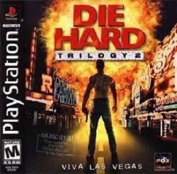

Já Imaginou três jogos explosivos em um único CD? É exatamente isso que se encontra em Die Hard Trilogy. Como você pode perceber, cada jogo é baseado em um filme da série Duro de Matar. Jphn McClare (que no cinema foi vivido por Bruce Wills) contra im batalhão de sequestradores violentos que só tem um objetivo: acabar com a fama de John de ser "duro de matar".
São mais de 15 fases de brutalidade total dentro do edifício Nakatomi Plaza. A melhor tática para vencer é aprender a esconder McClane atrás de paredes e, sempre que sair do seu esconderijo, disparar o máximo de tiros contra os inimigos. A primeira etapa da trilogia é um desafio bem difícil. Além de ser rápido com os tiros, é presciso também usar muita estrategia para enganar os sequestradores e conseguir chegar ao final.
Prepare-se para intensos momentos de emoção e violência dentro do Aeroporto internacional de Dulles. Sua missão é detonar as dezenas de sequestradores que dominaram o aeroporto, até chegar a seu objetivo final, que é pegar um carro elétrico para andar na neve, e assim salvar um avião sequestrado. Aproveite esta dica logo no início do episódio, se atingir o helicóptero que sobrevoa o local ganhará munição ilimitada para sua bereta.
Entre numa Nova York virtual e persiga sequestradores no centro da cidade, no Central Park, ou no metrô. Você terá de mostrar habilidade no trânsito e desviar de carros guiados por motoristas piores do que você. Dos três jogos, este é o mais difícil. Além de habilidade, será presciso muita sorte.